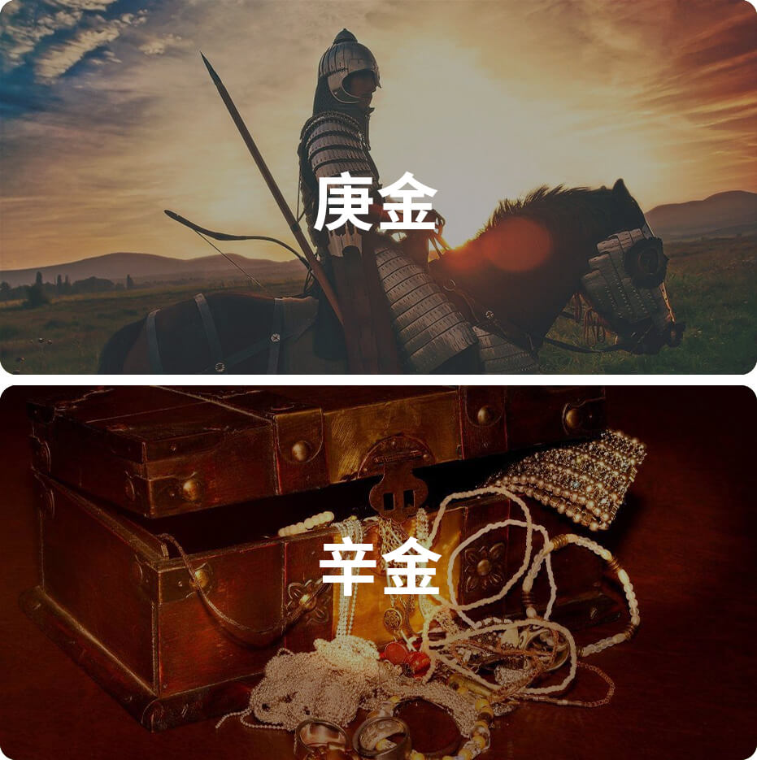

辛金在十天干里排行第八位，属阴金，主义。
自然属性：金银珠宝，小型金属

辛金性格：
温文儒雅、有韧性、心思细腻
关键词：温文儒雅
辛金就如金银珠宝，美轮美奂地展示在博物馆展厅，或者是商场柜台上。所以，辛金代表着一切体面的、具有装饰性的美好事物。在社会生活中，辛金日主的人，也是个得体而优雅的人，与之交流，常给人如沐春风之感。
关键词：有韧性
辛金可以被锻造和塑造成各种形态，甚至拉伸成比头发还要细的金丝，可见辛金有着极强的可塑性和韧性。所以，辛金的日主虽然给人柔和之感，但是深入了解，会发现他是内心相当坚韧、有弹性的人。
关键词：心思细腻
精美的珠宝表面，可以像镜子般，清晰地映射出周遭的事物。这就如辛金人的内心，不声不语，但是心如明镜，把一切都收在眼底。辛金必定是个心思细腻的人，你会发现身边大事小事，很难瞒得住他们的眼睛！
辛金日主人的正面性格：敏感细腻，外表柔弱，内在却暗含坚硬，自我要求高，追求完美。待人亲切，有同情心，人际关系好，善恶分明，擅长创新，有独特想法，有品位。
辛金日主人的负面性格：好虚荣面子，在乎外表，易贪求，意志薄弱，抗打击能力弱，现实主义。
诗诀
辛金生人好为人，交的朋友成了群。
君子小人常在内，常常不离你家门。
交下君子厚又厚，交来交去报你恩。
交下小人无情义，日后骗你要小心。
（性格气质需要综合命局的五行、十神、用神等特质综合评判，此处仅提供辛金日主维度的特质参考，需知辛金越旺，则辛金特性越明显）
辛金名人
李嘉欣、周星驰、甄子丹、葛优、林宥嘉、蔡依林、李彦宏、王祖蓝、徐克
辛金类象：
秋霜、冰雹、律师、议员、肺脏、牙齿、中介业、针灸、手术、五金器具、象牙、玉石。
《滴天髓》论辛金
辛金软弱，温润而清，畏土之叠，乐水之盈，能扶社稷，能救生灵，热则喜母，寒则喜丁。
《渊海子平》论辛金
辛金珠玉性通灵，最爱阳和沙水清。成就不劳炎火煆，滋扶偏爱湿泥生。
木多火旺宜西北，水冷金寒要丙丁。坐禄通根身旺地，何愁厚土没其形。